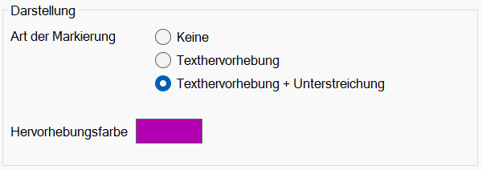

")

Einstellungen für die Darstellung von Makrotexten in der Zeichnung. Die gewählten Einstellungen werden während Abfragen verwendet, in denen die Eingabe von Makrotexten möglich ist.
 |
|---|
Anmerkung: In [Konst 1 | Texte | MkrTxt] werden alle Texte, die mindestens einen Makrotext enthalten, in der Farbe für Markieren hervorgehoben. (s. Systemdaten - Farbeinstellung)
Darstellung
Art der Markierung
·Keine:
Makrotexte werden nicht hervorgehoben.
·Texthervorhebung:
Nur die Makrotexte werden hervorgehoben.
·Texthervorhebung + Unterstreichung:
Makrotexte werden hervorgehoben. Eine Unterstreichung markiert den gesamten Textblock: Makrotext und den manuell hinzugefügten Text.
Hervorhebungsfarbe
Klicken Sie auf das Farbfeld, um eine andere Farbe für die Makrotexte auszuwählen.
|
In diesem Dialog können Sie entweder eine Grundfarbe oder eine benutzerdefinierte Farbe auswählen. Durch das Bewegen des Cursors mit gedrückter linker Maustaste im Farbspektrum lässt sich eine Farbe einstellen. Sättigung und die Helligkeit können über den Schieberegler oder per Eingabe angepasst werden. Alternativ können Sie auch die Farbanteile Rot, Grün, Blau angeben. Um eine Farbe den benutzerdefinierten hinzuzufügen, klicken Sie auf Farbe hinzufügen. Markieren Sie ein Farbkästchen und bestätigen Sie mit OK, um die Farbeinstellung zu übernehmen. |

Zugehörige Referenz:
Siehe auch: